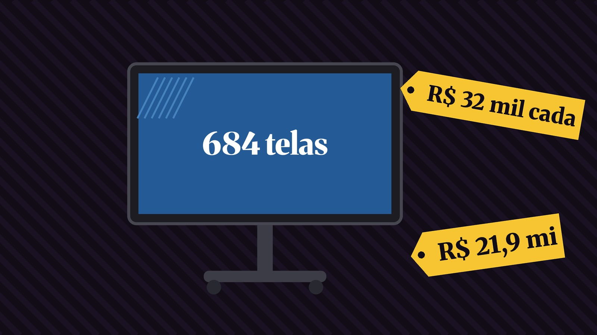

Gravataí · Educação
Gravataí pagou R$ 21,9 milhões por 684 telas da empresa citada em investigação da PF; 85% na gestão Zaffalon
Dados do Tribunal de Contas mostram que a prefeitura comprou lousas digitais da Smart, de Lajeado, a R$ 32 mil cada. A maior parte veio de "carona" na licitação de um consórcio de saúde do Vale do Taquari, paga com dinheiro da educação.
Sob Vigia
24 DE NOV DE 2026, 10:13
Foto: Gravataí comprou 684 lousas digitais da Smart entre 2019 e 2022. (Ilustração: Sob Vigia)
Atualizada em 24 de novembro para incluir a auditoria e o julgamento do Tribunal de Contas sobre as compras de Gravataí.
A Prefeitura de Gravataí pagou R$ 21,9 milhões por 684 lousas digitais (telas interativas) à mesma empresa: a Smart Tecnologia em Comunicações, de Lajeado. É a fornecedora que aparece no centro da operação da Polícia Federal deflagrada na última quinta-feira (19), que fez buscas na sede do Tribunal de Contas do Estado (TCE-RS) e na casa do vice-presidente do tribunal, o conselheiro Edson Brum.
O Sob Vigia cruzou os dados de licitações (LicitaCon) e de pagamentos que a própria prefeitura envia ao TCE-RS. A primeira compra foi no fim do governo Marco Alba. A maior parte, 85% do valor, foi feita na gestão Luiz Zaffalon.
O que a PF investiga
A Operação Circuito Paralelo, autorizada pelo Superior Tribunal de Justiça, apura suspeitas de corrupção, tráfico de influência e associação criminosa no favorecimento de empresas em contratos de prefeituras gaúchas. Segundo reportagens de Zero Hora e de outros veículos, representantes da Smart cobrariam comissão de 10% sobre cada contrato e repassariam parte ao conselheiro. Brum nega irregularidades. A PF mantém sob sigilo a lista de municípios investigados; Gravataí aparece entre as prefeituras que compraram as telas.
Não há, até aqui, acusação formal contra servidores ou agentes públicos de Gravataí.
O que Gravataí comprou
| Gestão | Como comprou | Quando | Lousas | Preço de cada | Total pago |
|---|---|---|---|---|---|
| Marco Alba | Pregão próprio (301/2019) | pago entre set. e dez. de 2020 | 100 | R$ 31.750 | R$ 3,18 mi |
| Luiz Zaffalon | Pregão eletrônico (214/2021) | set. de 2021 | 2 | R$ 33.000 | R$ 66 mil |
| Luiz Zaffalon | Adesão à ata do Consisa (2 processos) | 27 e 30 de dez. de 2021 | 400 | R$ 32.000 | R$ 12,8 mi |
| Luiz Zaffalon | Nova adesão à ata do Consisa | abr. de 2022 | 182 | R$ 32.000 | R$ 5,82 mi |
| Total | 684 | R$ 21,9 mi |
Na gestão Alba, foram 100 lousas e R$ 3,18 milhões. Na gestão Zaffalon, 584 lousas e R$ 18,7 milhões.
O que o Tribunal de Contas já disse
As compras de Gravataí já passaram pelo TCE-RS. Segundo reportagem do Extra Classe de janeiro de 2025, uma auditoria do tribunal analisou compras de telas interativas em sete prefeituras gaúchas, entre elas Gravataí, e estimou o custo de cada tela em cerca de R$ 10 mil, contra os R$ 32 mil cobrados pela Smart. Segundo reportagens da época, o prejuízo apontado pela auditoria em Gravataí passava de R$ 7 milhões, somando as compras de 2019 e 2021. A prefeitura contestou, afirmando que os preços se basearam em pesquisas de mercado e especificações técnicas.
No julgamento, porém, o TCE afastou as suspeitas. Segundo o Giro de Gravataí, o tribunal concluiu que a contratação de 582 telas, por R$ 18,6 milhões, não teve fraude, conluio, direcionamento nem sobrepreço comprovado. Considerou o preço compatível com o mercado da época, por se tratar de produto novo e sem parâmetros de comparação, e julgou as contas regulares, com ressalvas.
Na semana passada, o vice-presidente do mesmo tribunal, Edson Brum, passou a ser alvo da Polícia Federal, sob suspeita de apoiar a atuação de intermediários na venda de telas interativas a prefeituras. Não há, até aqui, informação de que ele tenha atuado no processo de Gravataí.
A "carona" num consórcio de saúde
A maior parte das telas não foi comprada por licitação da própria prefeitura. Em outubro de 2021, a gestão Zaffalon publicou um pregão para 300 lousas, com preço estimado de R$ 36,8 mil cada; segundo o LicitaCon, ele não passou da fase de edital. Nos últimos dias do ano, a prefeitura aderiu, em dois processos assinados com três dias de diferença, a uma ata de registro de preços do Consórcio Intermunicipal de Saúde do Vale do Rio Taquari (Consisa): 400 telas, R$ 12,8 milhões. Em 2022, voltou à mesma licitação do consórcio para mais 182.
A adesão à ata, conhecida como "carona", é permitida por lei: um órgão aproveita a licitação feita por outro e compra direto do fornecedor vencedor, sem fazer concorrência própria. É justamente esse mecanismo que aparece nas reportagens sobre a investigação. No caso de Gravataí, a carona foi numa licitação de um consórcio de saúde para comprar equipamento de escola.
Dinheiro da educação
As compras de 2021 e 2022 foram pagas com recursos de Manutenção e Desenvolvimento do Ensino (MDE), a verba que a Constituição obriga o município a aplicar em educação, distribuída entre ensino fundamental, educação infantil e educação especial. É a mesma conta que, em 2026, chegou a agosto com R$ 31 milhões de atraso em relação ao mínimo constitucional.
E a manutenção?
O Sob Vigia recebeu relatos de que parte das lousas já não funciona e está fora da garantia, sem contrato de manutenção. Os relatos ainda não foram confirmados. Nos dados de pagamentos da prefeitura de 2023 a março de 2026, não aparece nenhum gasto com conserto ou manutenção de lousas digitais.
O tamanho do negócio no RS
Segundo as reportagens sobre a operação, a Smart vendeu telas para ao menos 25 prefeituras gaúchas, num total de mais de R$ 58 milhões. Em 2022, um levantamento do próprio TCE-RS apontou que 51 municípios gastaram R$ 152 milhões com telas interativas entre 2019 e 2022, principalmente da Smart.
O que diz a prefeitura
O espaço está aberto à Prefeitura de Gravataí e às secretarias de Educação e da Fazenda. O Sob Vigia quer saber: - quantas das 684 lousas estão funcionando hoje e em quais escolas; - se há contrato de manutenção ou se o período de garantia terminou; - por que a prefeitura optou por aderir à ata de um consórcio de saúde em vez de fazer licitação própria; - se a prefeitura foi procurada pela Polícia Federal ou pelo TCE-RS sobre essas compras.
O espaço também está aberto à empresa.
Fontes
- TCE-RS, LicitaCon: Pregão Presencial 301/2019; Pregão Eletrônico 214/2021, 224/2021 e 347/2022; processos de adesão 197/2021 e 201/2021 (ata 82/2021 do PE 8/2021 do Consisa).
- TCE-RS, dados abertos de empenhos, liquidações e pagamentos da Prefeitura de Gravataí, 2019 a 2026.
- Receita Federal: CNPJ 01.013.714/0001-05 (hoje com razão social Giello Tech Ltda., Lajeado).
- Zero Hora (20/11/2026), Terra, BPMoney e Gazeta do Sul, sobre a Operação Circuito Paralelo.
- Extra Classe (janeiro de 2025), sobre a auditoria do TCE-RS nas compras de telas interativas de sete prefeituras.
- Giro de Gravataí, sobre o julgamento do TCE-RS das compras de Gravataí.
Leia também
- Dossiê do mandato: 7 documentos em 2026, nenhum projeto de lei. A atuação do bolsonarista Evandro Coruja na Câmara
- Menos concursados, mais temporários e terceirizados: o que mudou no quadro da Prefeitura de Gravataí
- 965 faltas de água e dois aumentos em seis meses: o saneamento que Gravataí entregou à Aegea